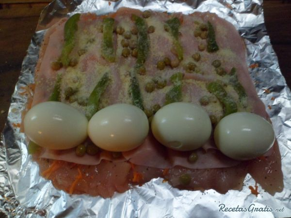

Arrollado de pollo
El arrollado de pollo argentino es una comida muy práctica para realizar cuando tenemos invitados en casa, ya que se puede servir frío o caliente, es decir, como entrante o plato principal. Además, nos permite prepararlo con antelación y tenerlo listo a la hora de servirlo. Otra de las ventajas que tenemos con el arrollado de pollo, es que se puede variar el relleno de acuerdo a los ingredientes que tengamos o al gusto de cada uno.
Como hacer arrollado de pollo
-
El primer paso para hacer el arrollado de pollo argentino es
alistar todos los ingredientes.
-
Una vez que tengamos preparados todos los ingredientes, le
quitamos la piel a la pechuga de pollo.
-
Deshuesamos la pechuga, con mucha paciencia, la vamos abriendo
con un cuchillo bien afilado, tratando de mantenerla lo más
entera posible.
-
Por otro lado, rallamos la zanahoria que formará parte del
relleno del arrollado de pollo. Reservamos.
-
Tomamos el pimiento, lo pinchamos con un tenedor y lo quemamos
sobre el fuego para quitarle la piel.
-
Colocamos el pimiento en un bol con agua fría para limpiarlo
completamente y continuar con la preparación del arrollado
argentino.
-
El pimiento que usaremos para el relleno del arrollado de
pollo argentino debe quedar como se muestra en la imagen. Otra
opción es usar pimiento en lata, aunque de esta forma queda
mucho más sabroso..
-
Tomar la pechuga de pollo deshuesada y colocarla sobre un
trozo de papel aluminio. Condimentamos con sal, pimienta, ají
molido y pimentón.
-
Luego, rellenamos la pechuga de pollo. Para ello, colocamos la
zanahoria rallada, las fetas de jamón cocido, los pimientos,
las arvejas, el queso rallado y por último, sobre un extremo,
los huevos cocidos.

-
Lo vamos enrollando ayudándonos con el papel aluminio, como
vemos en la siguiente imagen.
-
Después, le quitamos el papel aluminio y lo atamos para
mantener la forma. Disponemos el arrollado de pollo sobre una
fuente con un chorrito de aceite. Cocinamos en el horno fuerte
por el término de una hora aproximadamente, moviéndolo para
que se dore por todas partes.
-
Cuando esté listo, retíralo del horno, córtalo en rodajas
anchas y sírvelo con alguna guarnición de papas que te guste o
de verduras. Esta receta es ideal para servir durante la
festividad de Navidad u otras fechas especiales.
Si te gustó esta receta, dejanos tu comentario.

Mariana7:41pm, Ayer
Que cosa mas rica por dios. cuando vivi unos años en bs as que la pase tan bien que extraño tanto a la gente que me han tratado muy bien . y la comida riquisimaaaa. un abrazo muy grande a vosotros. saludos desde españa.
Ceci2:32pm, Sabado 04 sep
Muy buena receta, lo haré, gracias por compartir. Saludos.
Francisco10:30am, lunes 05 sep
los felicito,todavia no la prepare, pero de tantos años de buscar recetas en inter,es la primera muy bien explicada y estoy seguro que valdra bien hacer esta preparacion muchas gracias.

Rocio8:55pm, miercoles 08 sep
Gracias por compartir tus recetas! Excelente la dedicación del paso a paso,se hace más fácil con las fotos! Saludos desde Rosario!!